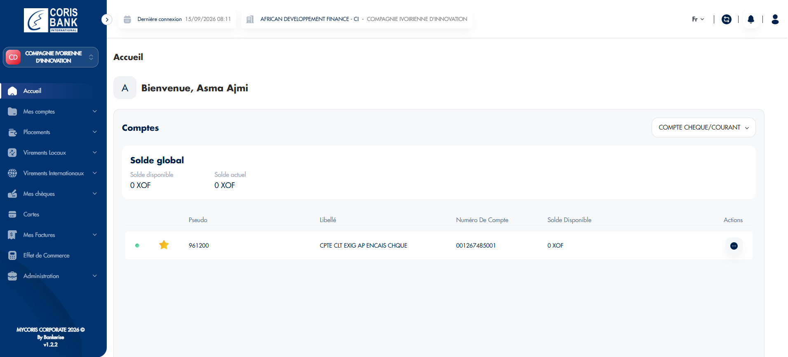

Projet 01
Juin 2024 — Présent
MyCoris Bank Corporate
Proxym IT
- Développement d'une plateforme bancaire corporate multi-tenant déployée pour plusieurs institutions financières, architecturée en DDD, CQRS et hexagonale.
- Conception d'un moteur de règles métier permettant d'adapter les comportements fonctionnels selon les besoins de chaque tenant.
- Développement de microservices Spring Boot et optimisation des accès aux données via Redis et Elasticsearch.
- Mise en place de tests unitaires et d'intégration pour garantir la fiabilité des fonctionnalités.